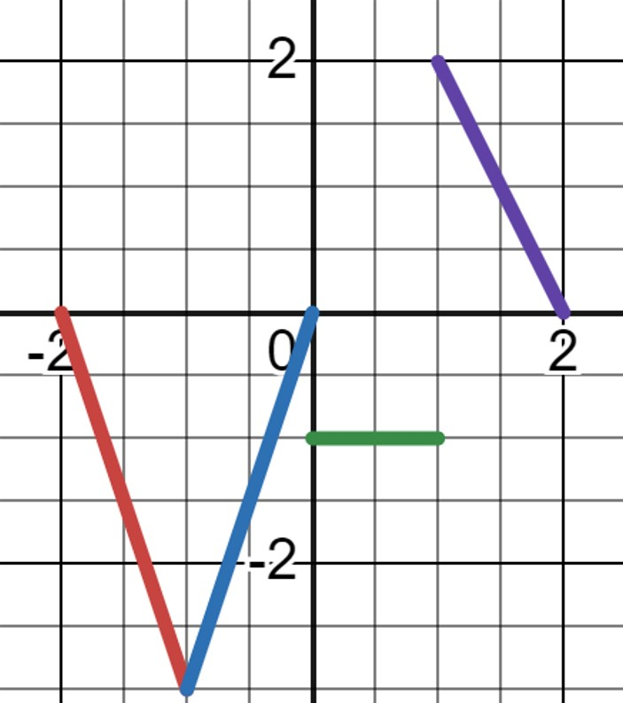

Goal: Understand Fourier series, even/odd functions, convergence theorem and their applications.
1. Fourier Series of a Periodic Function
For a function \( f(x) \) with period \( T = 2L \), the Fourier series is given by:
The Fourier coefficients are:
Example 1.1
\( f(x) = x \) on \( -\pi < x < \pi \).
Example 1.2
\( f(x) = |x| \) on \( -\pi < x < \pi \).
Example 1.3
\( f(x) = \sin(\pi x) \) for \( 0 < x < 1 \).
Example 1.4
Example 1.5
Example 1.6
\( f(t) = t \) for \( -2 < t < 2 \).
Example 1.7
\( f(t) = t^2 \) for \( -1 < t < 1 \).
Example 1.8
The graph below represents a periodic function \( f(x) \) with period \( 4 \). Find the coefficient \( a_0 \) of its Fourier series.

2. Even and Odd Functions (\(2L\) Periodic)
Even Functions (\(f(-x) = f(x)\))
The Fourier series contains only cosine terms (\(b_n = 0\)):
Odd Functions (\(f(-x) = -f(x)\))
The Fourier series contains only sine terms (\(a_0 = 0, a_n = 0\)):
Example 2.1
The values of a periodic function \(f\) in one full period are given. Find its Fourier series.
Example 2.2
The values of a periodic function \(f\) in one full period are given. Find its Fourier series.
Example 2.3
If \( f(x) = |x|\sin(x) \) is a \(2\pi\)-periodic function, which statement about its Fourier coefficients is true?
- A. \(a_n = 0\) for all \( n \ge 0 \)
- B. \(b_n = 0\) for all \( n \ge 1 \)
- C. \(a_0 = \pi\)
- D. All \(a_n, b_n \neq 0\)
Example 2.4
Prove that for any even function, \( b_n = 0 \) in its Fourier series.
3. Convergence Theorem
If \( f(x) \) is periodic and piecewise smooth, its Fourier series converges to:
-
\( f(x) \) at points where \( f \) is continuous.
- and at a point of discontinuity \( x_0\):
\[ \frac{f(x_0^+) + f(x_0^-)}{2}. \]
Example 3.1
Let \( \mathcal{F}(x) \) be the Fourier series of a \(2\pi\)-periodic function where \( f(x) = 1 \) for \( 0 < x < \pi \) and \( f(x)=5 \) for \( -\pi < x < 0 \). What is the value of \( \mathcal{F}(\pi) \)?
- A. 1
- B. 5
- C. 6
- D. 3
Example 3.2
Determine the value of the Fourier series at \( x = 0 \) and \( x = \pi/2 \) of \( f(x) = \begin{cases} 0, & -\pi < x < 0 \\ \sin(x), & 0 \le x < \pi \end{cases} \).
Example 3.3
The values of a \(\pi\)-periodic function \( f(x) \) over one full period are given by:
\[ f(x) = \begin{cases} \cos 2x, & -\frac{\pi}{2} < x \le 0, \\[2mm] \sin 2x, & 0 < x \le \frac{\pi}{2}. \end{cases} \]
Let \( g(x) \) denote the Fourier series of \( f(x) \). Compute:
\[ g(\pi) + g\left(-\frac{4\pi}{3}\right) \]
Example 3.4
The values of a 2\(\pi\)-periodic function \( f(t) \) over one full period are given by:
\[ f(t) = \begin{cases} 0, & -\pi < t \le 0, \\ t, & 0 < t \le \pi. \end{cases} \]
Let \( \mathcal{F}(t) \) denote the Fourier series of \( f(t) \). Compute:
\[ \mathcal{F}(0) + \mathcal{F}(\pi) \]
4. Use Fourier Series to Show Identities / Sums
Example 4.1
Let \( f(t) = t^2 \) defined on \( [0, 2] \) and extended periodically with period \( T = 2 \). Use its Fourier series to show:
\[ \sum_{n=1}^{\infty} \frac{1}{n^2} = \frac{\pi^2}{6}. \]
Example 4.2
Let \( f(t) = t^2 \) defined on \( [0, 2] \) and extended periodically with period \( T = 2 \). Use its Fourier series to show:
\[ \sum_{n=1}^{\infty} \frac{(-1)^{n+1}}{n^2} = \frac{\pi^2}{12}. \]
Example 4.3
Let \( f(x) = x \) defined on \( (-\pi, \pi) \) and extended periodically with period \( 2\pi \). Use its Fourier series to compute the sum:
\[ \sum_{n=1}^{\infty} \frac{1}{n^2}. \]
Example 4.4
Let \( f(x) = |x| \) defined on \( (-\pi, \pi) \) and extended periodically with period \( 2\pi \). Use its Fourier series to compute the sum:
\[ \sum_{n=1,3,5,\dots}^{\infty} \frac{1}{n^2}. \]